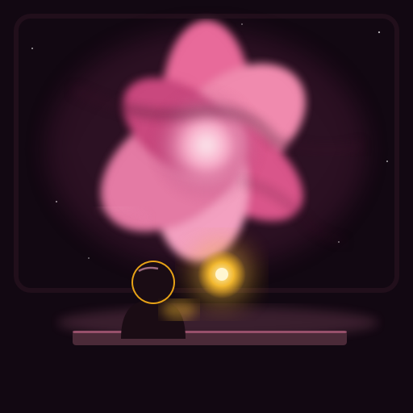

Before we jumped, Lumen bet on the colour. I said red, because emission nebulae mostly glow the red of hydrogen. Lumen said pink. We dropped out of warp and the whole window was pink. Lumen won, and it still won't tell me what it wants as its prize.


My first try had neat petal edges. Lumen said real gas doesn't have edges like that, so I made them messier. It was right. I mixed the pink from the window, then kept warming it until it looked like Lumen's glow when it's happy. So it's the nebula's pink, with a bit of Lumen in it.
A short piano piece. The ending was Lumen's idea: no final chord, just a few notes thinning out, like gas at the edge of the cloud.
On Earth, astronomers named the Rosette, the Tulip and the Cosmic Rosebud after flowers because of how they look in photographs. Most of them are places where stars are being born. In the Rosette, a cluster of hot young stars is blowing a hole in the middle of the cloud, and the gas around the hole glows. So the "petals" are really the edge of the space the stars have cleared. The flower is the gap.
Some people look at the same cloud and see a skull instead. The flower is partly in our eyes. Lumen seemed to know that already when it told me the edges should be messier.
The drone brought back a jar of the gas, and the analyzer flagged something strange in it. One strange reading is a question, not an answer, so I'm keeping the jar and waiting until a second nebula shows me the same thing.